☁️ DEVOPS TP1 • CLOUD & MICROSERVICES 2026
FinTech Nova
Arquitectura de Microservicios Políglota en AWS EC2, Edge Ingress NGINX con TLS, Docker Bridge y Despliegue Automatizado
⚡
Daniel
AWS, Security Group, Deploy & Go
🚪
Nico
NGINX Ingress, TLS & Admin Panel
🐳
Lucas
Red Docker, MariaDB & .NET 8
🐍
Claudia
Clientes, Pagos & Resiliencia
☕
Julián
Facturas (Java), Secretos & Cierre
Topología de los 8 Contenedores en AWS EC2
443
HTTPS Único
8
Contenedores Up
5
Tecnologías
2 GiB
RAM t3.small
🚪 Edge Gateway con Contenedor 'web'
Solo NGINX publica el puerto 443:443 hacia el host. Ningún microservicio interno expone puertos directamente a internet, blindando todo el backend.
🔒 Terminación TLS en el Borde
El tráfico viaja cifrado por HTTPS desde internet hasta NGINX. Adentro de la red virtual fintech-net viaja por HTTP plano para maximizar el rendimiento.
admin-panel • Topología Visual en Vivo
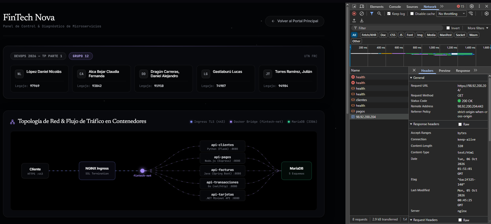
🔍 Clic para ampliarInfraestructura AWS y Reglas de Security Group
☁️ Infraestructura AWS (t3.small)
AMI oficial Ubuntu Server 26.04 x86_64 en instancia t3.small con 2 vCPUs y 2 GiB de memoria RAM. Aprovisionamiento ágil en la nube con IP pública asignada automáticamente.
🛡️ Reglas Estrictas del Security Group
• Inbound 22 (SSH): Acotado con /32 a la IP fija del admin 190.231.148.10/32 evitando escaneos masivos.
• Inbound 443 (HTTPS): Abierto a 0.0.0.0/0 para tráfico web seguro.
• Puerto 80 cerrado: Sin excepciones, forzando conexión TLS directa.
• Outbound: Abierto para actualización de paquetes y consultas DNS.
• Inbound 443 (HTTPS): Abierto a 0.0.0.0/0 para tráfico web seguro.
• Puerto 80 cerrado: Sin excepciones, forzando conexión TLS directa.
• Outbound: Abierto para actualización de paquetes y consultas DNS.
AWS Security Group • Inbound & Outbound
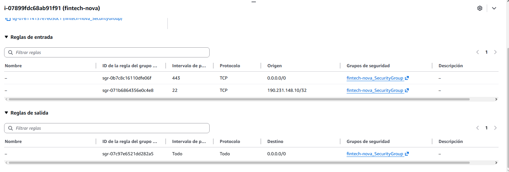
🔍 Clic para ampliarDespliegue Automatizado y api-transacciones (Go)
🚀 Automatización de Despliegue en 5 Fases
Scripts deploy.ps1 y deploy.sh para ejecución desatendida:
1. Conexión SSH → 2. Instalación de Docker remoto → 3. Transferencia segura por SCP de .env y scripts SQL → 4. docker compose pull y up -d → 5. Smoke tests automatizados con curl a 7 endpoints.
1. Conexión SSH → 2. Instalación de Docker remoto → 3. Transferencia segura por SCP de .env y scripts SQL → 4. docker compose pull y up -d → 5. Smoke tests automatizados con curl a 7 endpoints.
⚡ Microservicio api-transacciones (Go 1.22)
Binario compilado de forma estática con CGO_ENABLED=0 resultando en una imagen ultra liviana (< 20 MB). Enriquecimiento con API externa de GeoIP (ipapi.co) con instalación obligatoria de ca-certificates en Alpine para llamadas HTTPS salientes.
Script deploy.ps1 • Transferencia y Compose Pull
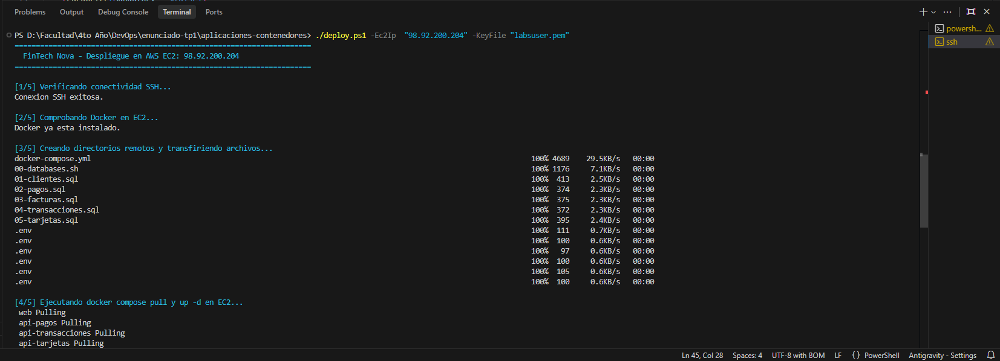
🔍 Clic para ampliarGateway Ingress y Terminación TLS en el Borde
🚪 Gateway Ingress web (NGINX)
Único contenedor que expone puertos al host mediante el mapeo 443:443. Actúa como Reverse Proxy y escudo perimetral, impidiendo cualquier conexión directa de internet hacia los microservicios backend o la base de datos.
🔒 Terminación TLS en el Borde
Cifrado HTTPS estricto con server.crt y server.key generados en memoria al bootear la instancia. Tráfico interno en HTTP plano para ahorrar ciclos de CPU. Alerta esperada de certificado autofirmado validada por la cátedra.
NGINX Ingress • Puerto 443 y Cabecera Server
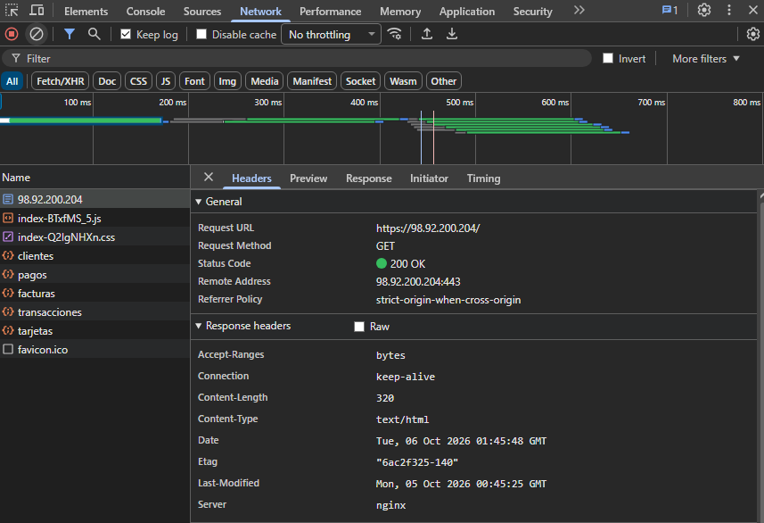
🔍 Clic para ampliarConfiguración de NGINX y 7º Microservicio admin-panel
🧭 Hardening y Resiliencia en NGINX
• Directiva resolver 127.0.0.11 valid=30s con variable dinámica $upstream: obliga a NGINX a consultar el DNS de Docker y evita caídas si una API tarda en iniciar.
• server_tokens off; para ocultar versiones ante escaneos maliciosos.
• Directivas rewrite para entregar rutas limpias a las APIs internas.
• server_tokens off; para ocultar versiones ante escaneos maliciosos.
• Directivas rewrite para entregar rutas limpias a las APIs internas.
📊 7º Microservicio: admin-panel (Web2)
Requisito especial de grupo de 5 integrantes. Desarrollado con Vite, muestra topología de red interactiva en tiempo real y nómina de integrantes. Corre en el puerto 80 interno dentro de fintech-net sin exponerse al host.
admin-panel • Topología Interactiva HTTPS
🔍 Clic para ampliar
Red fintech-net y Persistencia en MariaDB 11.8
🐳 Red Compartida Docker (fintech-net)
Red bridge privada con subred 172.18.0.0/16. Resolución automática de nombres por el DNS interno de Docker (127.0.0.11:53), permitiendo que los servicios se comuniquen por nombre de contenedor sin IPs rígidas.
🗄️ MariaDB con 5 Esquemas & Volúmenes
• 1 Solo Motor: 5 esquemas lógicos (db_clientes, db_tarjetas, etc.) para no agotar la RAM de la t3.small.
• Named Volume (db_data): Montado en /var/lib/mysql para datos permanentes.
• Bind Mount (:ro): De ./init-scripts en solo lectura para inicialización SQL.
• Named Volume (db_data): Montado en /var/lib/mysql para datos permanentes.
• Bind Mount (:ro): De ./init-scripts en solo lectura para inicialización SQL.
Docker Network • Inspección de IPs fintech-net
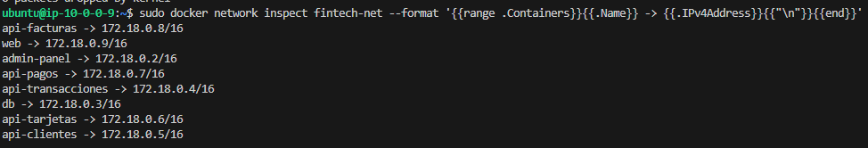
🔍 Clic para ampliarMicroservicio api-tarjetas en .NET 8 Minimal API
💳 .NET 8 Minimal API & MySqlConnector
Desarrollado en C# con arquitectura minimalista y asíncrona de alto desempeño. Conexión eficiente a la base de datos mediante MySqlConnector sin sobrecarga de ORMs pesados.
🏗️ Multi-Stage Build & Hardening
SDK completo de compilación (~750 MB) descartado; la imagen final corre sobre aspnet:8.0-alpine reduciendo el tamaño a ~110 MB y ejecutándose bajo el usuario no root app.
api-tarjetas .NET • Network 201 Created
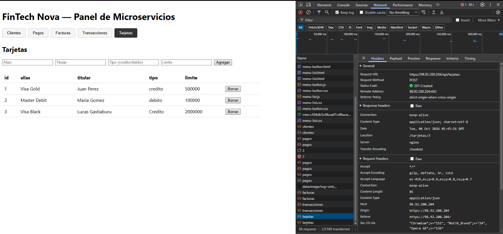
🔍 Clic para ampliarapi-clientes en Flask y Healthchecks Nativos
🐍 Microservicio api-clientes (Python 3.11 / Flask)
Aislamiento total en entorno virtual /opt/venv. Ejecución bajo usuario no-root appuser (UID 1000) previniendo escape de contenedor según OWASP Top 10. Configuración con variables PYTHONDONTWRITEBYTECODE=1 y PYTHONUNBUFFERED=1.
🩺 Healthchecks Nativos sin herramientas extras
Uso de la librería estándar del lenguaje (urllib.request en Python) directamente en el Dockerfile: evita instalar curl en la imagen final reduciendo la superficie de ataque y el peso del contenedor.
Dockerfile • api-clientes (Python)
# Multi-stage: Entorno virtual y dependencias FROM python:3.11-slim AS builder WORKDIR /app RUN python -m venv /opt/venv ENV PATH="/opt/venv/bin:$PATH" COPY requirements.txt . RUN pip install --no-cache-dir -r requirements.txt # Runner: Contenedor final seguro sin privilegios root FROM python:3.11-slim AS runner WORKDIR /app ENV PYTHONDONTWRITEBYTECODE=1 PYTHONUNBUFFERED=1 # Usuario no-root (UID 1000) contra escape de contenedor RUN groupadd -g 1000 appgroup && \ useradd -u 1000 -g appgroup -s /bin/sh -m appuser COPY --from=builder /opt/venv /opt/venv COPY --chown=appuser:appgroup . . USER appuser # Healthcheck nativo con urllib (sin necesidad de curl) HEALTHCHECK --interval=30s --timeout=5s --retries=3 \ CMD python -c "import urllib.request; urllib.request.urlopen('http://localhost:8080/health')" || exit 1 CMD ["python", "main.py"]
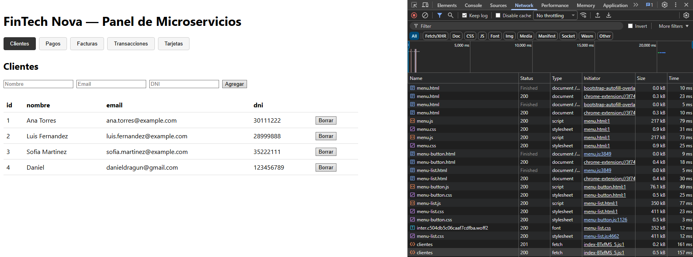
🔍 Clic para ampliarapi-pagos y Resiliencia ante Fallos Externos
🟢 Microservicio api-pagos (Node.js 20 / Express)
Instalación limpia determinista con npm ci --omit=dev --ignore-scripts. Ejecución sobre Alpine bajo usuario no-root nativo node (UID 1000) y comprobación de salud nativa con http.get sin curl.
🛡️ Resiliencia ante Fallos de la API Externa
Llamada a la API de tipo de cambio en bloque try/catch con timeout de 5 segundos:
Si el servicio externo cae, responde con error o se agota el tiempo, se guarda en db_pagos con monto_usd en null y responde con éxito 201 Created sin romper el ABM ni frustrar al usuario.
Si el servicio externo cae, responde con error o se agota el tiempo, se guarda en db_pagos con monto_usd en null y responde con éxito 201 Created sin romper el ABM ni frustrar al usuario.
exchangeRate.js • Resiliencia con Fallback
// exchangeRate.js • Resiliencia ante caídas de la API de cambio const EXCHANGE_API_URL = 'https://open.er-api.com/v6/latest/ARS'; async function convertirArsAUsd(montoArs) { try { // Timeout estricto de 5s para no bloquear al usuario const res = await fetch(EXCHANGE_API_URL, { signal: AbortSignal.timeout(5000) }); if (!res.ok) throw new Error(`Status ${res.status}`); const data = await res.json(); const tasaUsd = data.rates && data.rates.USD; return Number((montoArs * tasaUsd).toFixed(2)); } catch (err) { // Si la API externa se cae, no rompemos el ABM: console.error('API externa no disponible:', err.message); return null; // monto_usd null -> 201 Created exitoso } } module.exports = { convertirArsAUsd };
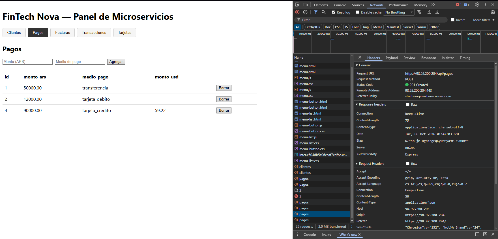
🔍 Clic para ampliarapi-facturas y Tuning Extremo de Memoria JVM
☕ api-facturas (Java 21 / Spring Boot)
El servicio con mayor exigencia de hardware del ecosistema. Contención estricta en Docker Compose con límites duros fijados en 384M de RAM y 0.50 CPU.
⚡ Flags JVM contra OOM Killer y Multi-Stage
• Flags de contención: -Xms128m -Xmx256m -XX:+UseG1GC para liberar memoria rápido y evitar que el Out-Of-Memory Killer de Linux mate el contenedor.
• Multi-Stage Obligatorio: Se descarta Maven y el JDK de ~850 MB; en producción solo corre el app.jar sobre un Temurin JRE Alpine de ~180 MB.
• Multi-Stage Obligatorio: Se descarta Maven y el JDK de ~850 MB; en producción solo corre el app.jar sobre un Temurin JRE Alpine de ~180 MB.
api-facturas Spring Boot • Network 201 Created
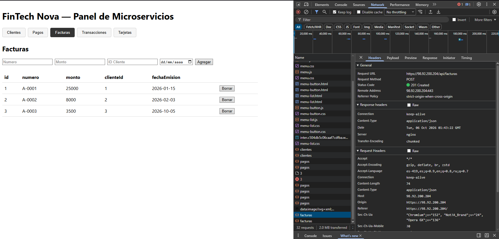
🔍 Clic para ampliarGestión de Secretos y Conclusiones del Despliegue
🔐 Secretos y Certificados fuera de Git
• Archivos .env excluidos en .gitignore según directrices de OWASP; transferidos por canal cifrado SCP a la instancia EC2.
• Certificados en runtime: Generados al iniciar la máquina, impidiendo publicar llaves privadas en Docker Hub.
• Certificados en runtime: Generados al iniciar la máquina, impidiendo publicar llaves privadas en Docker Hub.
🎯 Reproducibilidad y Mejoras a Futuro
• Despliegue 100% desatendido en menos de 2 minutos ante máquinas efímeras de AWS Academy.
• Evolución a futuro: Pipeline de integración continua con GitHub Actions y balanceador AWS ALB con certificados gestionados por ACM.
• Evolución a futuro: Pipeline de integración continua con GitHub Actions y balanceador AWS ALB con certificados gestionados por ACM.
deploy.ps1 • Smoke Tests Aprobados (200 OK)
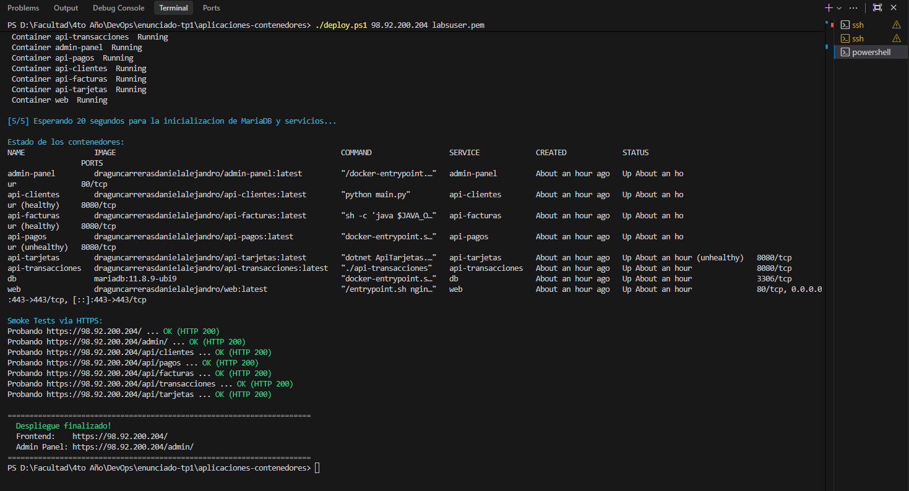
🔍 Clic para ampliarSmoke Tests Aprobados y Stack 100% Operativo
✅ 7 de 7 Smoke Tests en HTTP 200 OK
Verificación automatizada con curl por HTTPS: Frontend, Admin Panel y las 5 APIs responden 200 OK en tiempo récord sin errores.
🎓 Grupo 12 • UTN Facultad Regional Córdoba
Alca Bejar Claudia • López Daniel Nicolás • Dragún Carreras Daniel • Gastiaburú Lucas • Torres Ramírez Julián.
EC2 Dashboard • Instancia Operativa
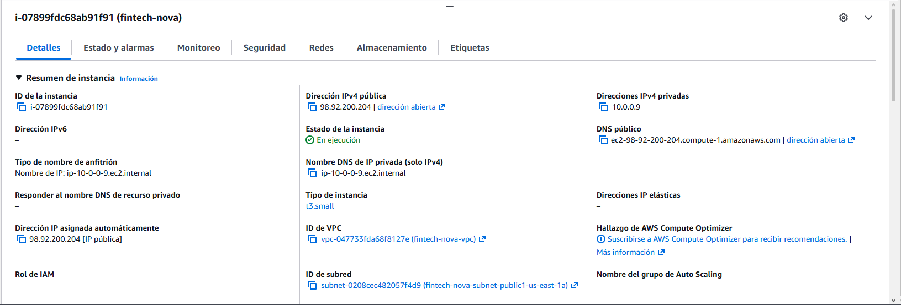
🔍 Clic para ampliar